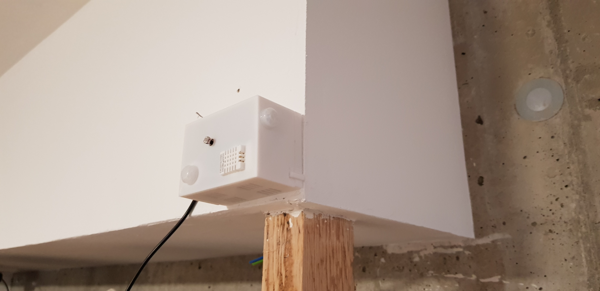
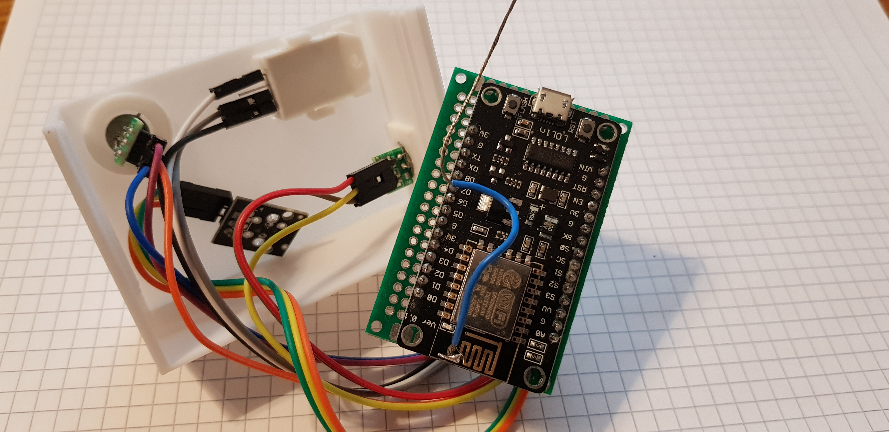

IoT multisensor¶
Install Arduino IDE¶
The Arduino IDE from my debian package repository is very old.
To get a newer version of the Arduino IDE got to the Official Website and download your package.
cd ./Downloads
sudo tar xvJf arduino-1.8.12-linux64.tar.xz -C /opt
ls -lh /opt/
sudo -E /opt/arduino-1.8.12/install.sh
Now, you have to add the Debian 10 login user to the dialout, tty, uucp and plugdev group. https://linuxhint.com/install_arduino_ide_debian_10/
ESP8266¶
To enable the esp8266 libs at Arduino IDE
- Go to File > Preferences -> Additional Board Manager URLs: http://arduino.esp8266.com/stable/package_esp8266com_index.json
- Tools > Board -> Boards Manager -> Search for ESP8266 and install
Dependency libs:
-
git clone https://github.com/knolleary/pubsubclient.git
-
git clone https://github.com/adafruit/DHT-sensor-library.git
-
copy to ~/Arduino/libraries
Features:
-
read temperatur / humility and publish cyclic
-
read light lux and publish cyclic
-
detect motion and publish at detection (on rising edge)
MQTT Interface
-
subscription topics (start with prefix(v01/esp/) + esp_name + topic_type)
-
e.g. v01/esp/nodeMCUIBS/config/get_status
| topic | meaning |
|---|---|
| /config/echo | just send an reply |
| /config/get_status[value: ""; status; prozess; heap] | |
| /config/set_name [new name] | change name of esp (with prefix for topics) |
| /config/send_intervall_sensor [new time in ms] | e.g. "10000" for 10s |
| /config/send_intervall_status | watchdog with status information |
| /config/reset [dht, setup, vars] |
NodeMCU GPIO¶
digitalWrite did NOT work with GPIOs 6, 7, 8, 11, and ADC (A0)
digitalRead did NOT work with GPIOs 1, 3, 6, 7, 8, 11, and the ADC (A0)
GPIO sensoric¶
| pin | DHT22 | AM312 | KY-018 |
|---|---|---|---|
| 1 | VCC | VCC | GND |
| 2 | DATA=D7 | OUT=D2/D5 | VCC |
| 3 | nc | GND | DATA=A0 |
| 4 | GND |
NODE mcu platine soldered¶
| GPIO | platine-color | device |
|---|---|---|
| D2 | orange | pir 1 -> pin_2 (stairs) |
| D5 | yellow | pir 2 -> pin_2 (corridor) |
| 3V | red | pir1/2 -> pin_1 |
| 3V | violett | pir1/2 -> pin_1 |
| gnd | blue | pir1/2 -> pin_3 |
| gnd | grey | pir1/2 -> pin_3 |
| A0 | green | S |
| g | yellow | middle |
| VV | orange | - |
| D7 | grey | DHT_2 |
| 3V | black | DHT_1 |
| g | white | DHT_4 |
NODE mcu general¶
| GPIO | device | GPIO | device |
|---|---|---|---|
| A0 | KY-S [black] | D0 | |
| G | KY-middle [brown] | D1 | |
| VV | KY - [red] | D2 | pir middle [orange] |
| S3 | D3 | ||
| S2 | D4 | ||
| S1 | 3V | ||
| SC | G | ||
| S0 | D5 | pir middle [yellow] | |
| SK | D6 | ||
| G | pir 3 [red/grey] | D7 | DHT22 2 (signal) [orange] |
| 3V | pir 1 [blue/green] | D8 | |
| EN | RX | ||
| RST | TX | ||
| G | G | DHT22 4 [red] | |
| VIN | 3V | DHT22 1 [brown] | |
| - | === | === | - |
3D case¶
This is the 3D model of the case

Natural environment¶
Here you can see the sensor in the wild

and here the inside of it

Downloads¶
You can download the STL file here: new_multisensor_V0.1
The arduino sketch is stored here: ah_iot_multisensor_v06